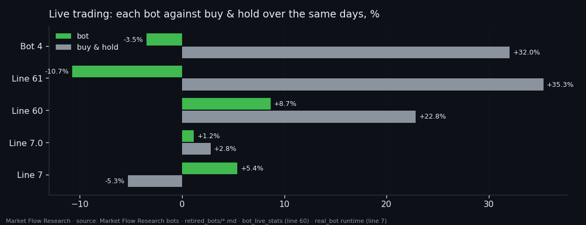
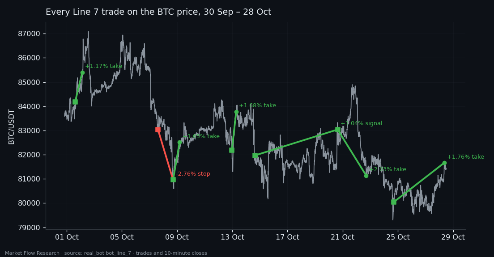
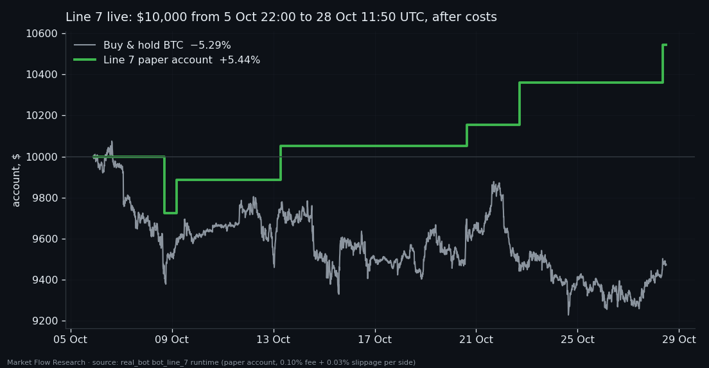

Line 7: The Best of All Our Bots — Live Trading Report, Every Trade
In shortWe have built and tested more than a dozen trading bots on the research published here. Line 7 is the only one ahead of buy & hold in live trading: from 5 October to 28 October 2026 its paper account made +5.44% after costs while BTC fell 5.29% — 6 trades, 5 take-profits. Real positions on the exchange: +1.39 USDT. Six trades are not a track record; this report lists every one of them and is updated as trades close. Research, not financial advice.
① All our bots, one scoreboard
| Bot | How it was tested | Trades | Result | Buy & hold, same days |
|---|---|---|---|---|
| Bot 1 "Battle" | historical run on the full dataset | 211 | −44.0% | −16.0% |
| Bot 2 | historical run; zero trades in its live week, 8–14 Jul | 72 | +55.8% (historical only) | — |
| Bot 4 | live paper trading, six coins, 9 Jul – 6 Sep | 169 | −3.45% | +32.0% |
| Bot 6 · line 61 | live paper trading, six coins, 75 days to 30 Sep | 32 | −10.70% | +35.3% |
| Bot 6 · line 60 | live paper trading, six coins, 15 Jul – 5 Oct | 39 | +8.66% | +22.8% |
| Bot 7.0 | live, BTC, 30 Sep – 5 Oct | 1 | +1.17% | +2.81% |
| Bot 7 · Line 7 | live, BTC, 5 Oct – 28 Oct, paper + real exchange | 6 | +5.44% | −5.29% |
Every bot in this table was built from the research on this site. Of those that traded live, every one except Line 7 ended behind simply buying and holding over the same days — including the two that made money. Line 7 is the only bot ahead of buy & hold in live trading: +5.44% against −5.29%.
Two honest caveats come with that sentence. Its live record is 23 days and 6 trades. And it was earned in a falling market, where being out of the market already helps. But Line 7 did not just lose less than the market — it made money while BTC fell: 5 of 6 trades closed at take-profit.
Smaller experiments — lines 5A, 5B, 5X_20, 50, 62 and two clones of line 60 — were retired after a handful of trades or after failing validation, so they are not in the table.

② How Line 7 decides
Every 10 minutes Line 7 looks back over the last 160 hours of second-by-second Binance order book for BTC — resting liquidity on both sides, liquidity added and pulled, buy and sell flow — folds it into a canvas of 1,100 records of 100 seconds with 8 features each, and hands the canvas to two small transformers. One says how likely it is that this moment sits in a 2.3% bottom zone, the other — in a 2.3% top zone.
- Entry: each probability is summed over its own window — 340 minutes for buys, 30 for sells — and a trade opens when the sum crosses its threshold (2.72 and 1.74).
- Exit: take-profit 1.9%, stop 2.5%, or a signal from the other side closes the position.
- Discipline: one position at a time, one trade per 2.3% leg.
The pair of networks was not picked for the most money on validation: it was picked for behaving the same on three separate stretches of data. The whole path — how the networks were trained, what each version made on every stretch — is in Bot 7: from an order-book canvas to live trading.
③ Every trade
| # | Version | Side | Entry (UTC) | Exit (UTC) | Exit by | Result after costs |
|---|---|---|---|---|---|---|
| 1 | 7.0 | long | 1 Oct 14:40 at 84,189.26 | 2 Oct 03:01 at 85,398.81 | take-profit | +1.17% |
| 2 | 7 | long | 7 Oct 14:40 at 83,042.99 | 8 Oct 17:00 at 80,962.59 | stop | −2.76% |
| 3 | 7 | long | 8 Oct 17:00 at 80,962.59 | 9 Oct 04:20 at 82,515.32 | take-profit | +1.65% |
| 4 | 7 | long | 12 Oct 23:10 at 82,179.65 | 13 Oct 06:50 at 83,776.24 | take-profit | +1.68% |
| 5 | 7 | long | 14 Oct 15:30 at 81,971.00 | 20 Oct 15:10 at 83,040.01 | opposite signal | +1.04% |
| 6 | 7 | short | 20 Oct 15:10 at 83,040.01 | 22 Oct 16:50 at 81,141.88 | take-profit | +2.03% |
| 7 | 7 | long | 24 Oct 16:50 at 80,044.87 | 28 Oct 08:40 at 81,665.78 | take-profit | +1.76% |
Costs are inside every number: 0.10% exchange fee and 0.02–0.03% slippage per side. Trades are booked at the close of the 10-minute decision step, the way the bot itself books them. No position is open at the time of this update.

④ The paper account against buy & hold
The paper account of the current version started with $10,000 on 5 Oct 22:00 UTC. On 28 October 2026, 11:50 UTC it holds $10,543.75 (+5.44%). Buying BTC at the first step and holding it to the last would have given −5.29%. With the cheaper costs used in our research runs (0.05% fee + 0.02% slippage) the same trades give $10,619.60.
Before it, version 7.0 (buys only) traded from 30 Sep 20:00 to 5 Oct 21:50 UTC: one trade, one take-profit, +1.17% while BTC rose 2.81%.

⑤ Real money on the exchange
Every signal is also sent to a real CEX.IO margin account: a $100 position at ×4 leverage. Closed so far:
| Position | Side | Entry | Exit | Net after fees and rollover |
|---|---|---|---|---|
| #129035 | long | 83,067.00 | 80,893.60 | −2.84 USDT |
| #129249 | long | 80,900.10 | 82,511.00 | +1.78 USDT |
| #130929 | short | 82,464.00 | 81,476.00 | +0.95 USDT |
| #131441 | long | 80,133.70 | 81,589.00 | +1.51 USDT |
Net on the exchange: +1.39 USDT. The exchange side differs from the paper account for reasons we publish as they happened. Position #129249 opened on 8 Oct without the bot's exit orders because of an error in the bot's order code; its owner moved the take-profit by hand and closed it on 20 Oct, so trades 4 and 5 of the table above never reached the exchange. The short #130929 was sent after that pause and entered 0.69% worse than the model's price, which is why it made +0.95 USDT where the model booked +2.03%. Fills otherwise land within 0.1% of the model's prices.
⑥ What six trades can and cannot tell
A winning trade has paid about +1.63% after costs and the stop −2.76%, so the bot needs to win about 63% of its trades just to stand still. A bot with exactly that break-even win rate and no edge at all would still win 5 or more of 6 trades in about 28% of cases — roughly one time in 4. Six trades cannot rule luck out. What they show is narrower and still useful: the signal has not fallen apart outside the data it was chosen on, and the gap to buy & hold so far points the right way.
That is why this page is a live report rather than a claim. Every new trade is added, losing ones included, and the scoreboard above is recomputed — if Line 7 stops being ahead, this page will say so.
Research, not financial advice. Nothing here is a recommendation to buy, sell or copy these trades. Past results — especially six of them — say little about the next trade.
Check the numbers yourself
- Raw data (.json): every trade, every exchange fill and every 10-minute BTC price used in this report
How to read this site in 5 minutes · All studies as one .md for AI · All research
← All research